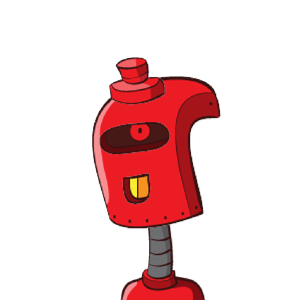

# Hammers and Saws <div align="center"> <h3> What We've Learned from Teaching Research Software Engineering <br/> with Python and R </h3> </div> <div class="flex-row"> <div class="flex-col narrow"> <p> <img class="column" src="./img/py-rse-cover.jpg" alt="Research Software Engineering with Python (cover)"/> </p> </div> <div class="flex-col"> <br/> <table> <tr> <td><a href="https://damienirving.github.io/">Damien Irving</a></td> <td><a href="https://katehertweck.com/">Kate Hertweck</a></td> </tr> <tr> <td><a href="https://lukewjohnston.com/">Luke Johnston</a></td> <td><a href="https://joelostblom.com/">Joel Ostblom</a></td> </tr> <tr> <td><a href="https://www.cwick.co.nz/">Charlotte Wickham</a></td> <td><a href="https://third-bit.com">Greg Wilson</a></td> </tr> </table> <div align="center"> <p> <a href="https://www.routledge.com/Research-Software-Engineering-with-Python-Building-software-that-makes/Irving-Hertweck-Johnston-Ostblom-Wickham-Wilson/p/book/9780367698324">Chapman and Hall/CRC, 2021, 978-0367698324</a> </p> <p> <a href="https://merely-useful.tech/py-rse/">https://merely-useful.tech/py-rse/</a> </p> </div> </div> </div> --- # TL;DR - Wrote a book to bridge the gap between introductory programming and research software engineering - Based on over 50 years of collective teaching experience - Narrative follows logical progression of package development - Can be used to teach a semester-long course (complete with exercises) - Free to read online - Learned a few things along the way… --- # What We Care About <p class="hanging-indent"> <strong>Open science</strong>: making data, methods, and results freely available to all by publishing them under open licenses. </p> <p class="hanging-indent"> <strong>Reproducible research</strong>: ensuring that anyone with access to the data and software can feasibly reproduce results, both to check them and to build on them. </p> <p class="hanging-indent"> <strong>Software sustainability</strong>: the ease of maintaining and extending it rather than replacing it, which depends on skills and culture as well as technology. </p> <p class="hanging-indent"> <strong>Graphic design</strong>: judging from these slides, not so much… </p> --- # Audience <div class="flex-row"> <div class="flex-col wide"> <img class="column" src="./img/amira-khan.png" alt="Amira Khan" /> </div> <div class="flex-col"> <p> <strong>Amira</strong>: Master's in Library Science; some stats courses; learned some R doing data science courses online; wants to tidy up and share scripts, datasets, and reports. </p> </div> </div> <div class="flex-row"> <div class="flex-col"> <p> <strong>Jun</strong>: PhD in geology plus a 4-month data science bootcamp; now does forensic audits; uses a variety of machine learning and visualization tools; wants to open source his work. </p> </div> <div class="flex-col wide">  </div> </div> <div class="flex-row"> <div class="flex-col wide"> <img class="column" src="./img/sami-virtanen.png" alt="Sami Virtanen" /> </div> <div class="flex-col"> <p> <strong>Sami</strong>: BSc in applied math and computer science; works for university's computing center; wants to help researchers build and run data pipelines. </p> </div> </div> --- # Trajectory | Novice | Competent | RSE | | ---- | ---- | ---- | | Email attachments | Git repository | Branching workflow | | "Just do it" | Slack/mailing list | Martha's Rules | | Interactive analysis | A pile of scripts | Build tools / CI | | Word / Google Docs | LaTeX | Site generator | | "It doesn't crash" | "Are there any NAs?" | Assertions / unit tests | | "Um, hi?" | README | LICENSE + CoC | --- # Main Topics - Automation - Unix shell - Make - Travis CI - Robust programming - Command-line Python scripts - Configuration - Testing - Error handling - Package development - Collaboration - Git and GitHub - Data provenance - Teamwork <div align="center"> <p> <em> Actual order is different so that learners score some early wins. </em> </p> </div> --- # Automation <ul> <li>The Unix shell is the unavoidable duct tape of research computing <ul> <li>Many other things don't make sense until you've seen it</li> </ul> </ul> <ul> <li>Make is past its best-by date <ul> <li>But none of its would-be replacements has achieved critical mass</li> </ul> </ul> <ul> <li>If we were starting over, we'd use GitHub Actions instead of Travis CI <ul> <li>Though we are nervous about how reliant open science is on GitHub</li> </ul> </ul> --- # Robust Programming <div align="center"> <p> <em> Based on <a href="https://doi.org/10.1371/journal.pcbi.1005412">Taschuk's Rules</a> </em> </p> </div> <ul> <li>Command-line Python scripts <ul> <li>Assume learners know <code>for</code> loops and functions</li> <li>Show them how to handle command-line arguments, stdin/stdout, etc.</li> </ul> </ul> <ul> <li>Configuration <ul> <li>Also serves as a lesson in software design</li> </ul> </ul> <ul> <li>Testing <ul> <li>Though we punt on "what tests should I write?"</li> </ul> </ul> <ul> <li>Error handling <ul> <li>Because testing is never perfect</li> <li>And neither are people</li> </ul> </ul> <ul> <li>Package development <ul> <li>Only for code, not data</li> </ul> </ul> --- # Collaboration <ul> <li>Git and GitHub <ul> <li>From zero to a branch-based workflow</li> <li>You can do a lot with GitHub without using Git</li> </ul> </ul> <ul> <li>Data provenance <ul> <li>How to actually implement the <a href="https://www.go-fair.org/fair-principles/">FAIR Principles</a></li> </ul> </ul> <ul> <li>Teamwork <ul> <li>Licensing</li> <li>Issue tracking</li> <li>Running meetings and making decisions</li> <li>Including everyone (especially <a href="https://doi.org/10.1371/journal.pcbi.1007296">newcomers</a>)</li> </ul> </ul> --- # What we learned about Python and R <ul> <li>Planned to write two books in parallel <ul> <li>Realized we needed to focus on one to complete</li> <li>Python version was further along</li> <li>R version should arrive in 2022</li> </ul> </ul> <ul> <li>Our experience is that: <ol> <li>Python users tend to arrive with more computing skills than R users</li> <li>The tidyverse is easier to teach than Pandas</li> </ol> </ul> <div align="center"> <table> <tr><th>Topic</th><th>Python</th><th>R</th></tr> <tr><td>Unix shell</td><td>Yes</td><td>No</td></tr> <tr><td>Make</td><td>Yes</td><td>No</td></tr> <tr><td>Git</td><td>Command line</td><td>GUI</td></tr> <tr><td>Packages</td><td>Code only</td><td>Code and data</td></tr> </table> </div> --- # What we learned about writing books <div align="center"> <p> It takes longer than you expect. </p> </div> --- # What we learned about writing together - It's a lot more fun than writing solo - Modeling the collaborative approaches covered in the books - Content is better: not one person's opinion and preferences --- # What we learned about writing tools - All available options are frustrating --- <div align="center"> <h1>Thank you</h1> </div> <div class="flex-row"> <div class="flex-col narrow"> <p> <img class="column" src="./img/py-rse-cover.jpg" alt="Research Software Engineering with Python (cover)"/> </p> </div> <div class="flex-col"> <br/> <table> <tr> <td><a href="https://damienirving.github.io/">Damien Irving</a></td> <td><a href="https://katehertweck.com/">Kate Hertweck</a></td> </tr> <tr> <td><a href="https://lukewjohnston.com/">Luke Johnston</a></td> <td><a href="https://joelostblom.com/">Joel Ostblom</a></td> </tr> <tr> <td><a href="https://www.cwick.co.nz/">Charlotte Wickham</a></td> <td><a href="https://third-bit.com">Greg Wilson</a></td> </tr> </table> <div align="center"> <p> <a href="https://www.routledge.com/Research-Software-Engineering-with-Python-Building-software-that-makes/Irving-Hertweck-Johnston-Ostblom-Wickham-Wilson/p/book/9780367698324">Chapman and Hall/CRC, 2021, 978-0367698324</a> </p> <p> <a href="https://merely-useful.tech/py-rse/">https://merely-useful.tech/py-rse/</a> </p> </div> </div> </div>